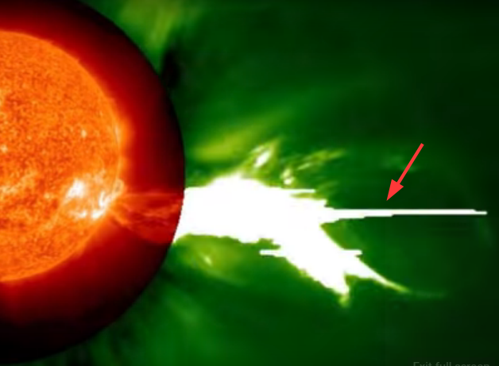
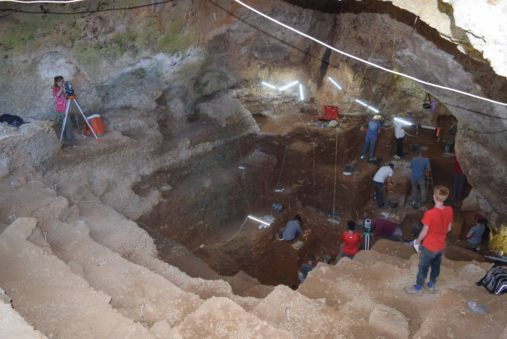

The Sardinian Disruption
72 hours to the Stone Age

Plasma
Plasma: The Peratt Environment
The presence of massive plasma z-pinch auroras created a Peratt environment.
Two types of phenomena were associated with it. They were the Peratt event (plasma) and the Sipsey event (electricity).
In the Domus di Janas (DdJ), there are images detailing what occurred.
The remarkable images in the DdJs S’Incantu and Mandra Antine provide valuable details of plasma’s behavior during Parett environments. The images demostrate plasma’s profound role in Earth’s natural processes.

Nuraghi
Why The Nuraghi Were Built
Nothing in the annals of geology can explain this landscape
in the districts of Marmilla and Trexenta near Gesico, Sardinia. However, neolithic
farmers living on the island over four thousand years ago documented what happened. It was not pleasant. They built the massive nuraghi in response. Nuraghe
Santu Antine has walls 5 meters thick. Poor farmers would not have built these
massive monuments unless confronting extremely powerful forces.
A major precept of geology asserts the landscape is shaped over time by erosion.
However, Sardinian farmers would say that terrain alteration can occur in a flash of
light. This narrative will advance evidence explaining the patterns on Trexenta and
Marmilla and the building of the nuraghi.

Caves
Caves and Man
Caves, one of the most protected environments, are full of sediment. The sources of this deposition
are largely unsubstantiated. How this material entered caves is critical to understanding why humans
occupied them. Caves were never used as abodes but as shelters from repeated occurrences of Peratt environments.
This article provides evidence to support this assertion.

Megafauna
The Death of the Megafauna
Sardinia is the key to understanding what lead to the Mega Fauna's
(MF) demise. Sardinia's landscape has been deeply scarred by plasma-earth connections from what
Dr. Anthony L. Peratt termed the 'Z-Pinch Aurora' (ZPA). From their
graphic representations in the Domus di Janas' (DdJs) and on menhirs,
neolithic farmers documented two threats from ZPAs. This article will detail
evidence about how the MF came to their demise.